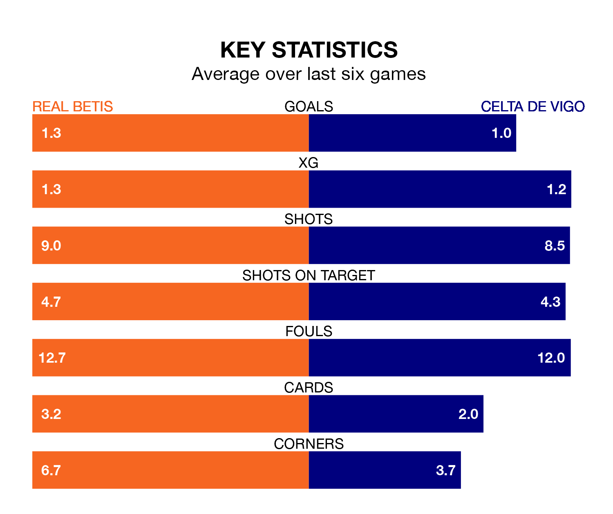

Real Betis welcome Celta de Vigo to the Estadio Benito Villamarín on late Friday looking to pick up points to end their four-game losing streak.
Betis's struggles have left them with just four points from their last six La Liga matches, while their opponents have earned eight from a possible 18.
In the last 10 years, Betis and Celta have played each other on 17 occasions. Betis won six of them, Celta five, and they drew six times.
On average, Betis scored 1.5 goals and Celta 1.5 in those matches.
Their last meeting was on January 3, when Celta won 2-1 at home.
Celta are 17th in the table after 30 games, of which they have won six and drawn 10, earning 28 points.
Betis are 10 places ahead of the away side in seventh, with 10 wins and 12 draws putting them on 42 points.
With 32 goals in 30 games so far this season, Celta are scoring at below the league average rate with 1.1 goals per game. And they are conceding more than average, letting in 44 goals at a rate of 1.5 per game.
The hosts are also below average scorers, with 1.2 goals per game, compared to a league average of 1.3. They have also conceded 1.2 goals per game.
Betis's last match was on March 31, a 3-2 loss against Girona, with Willian José getting the goals for Betis.
Celta drew 0-0 with Rayo Vallecano last time out, also on March 31.
Updated: 16:41 (UTC), 04/04/24